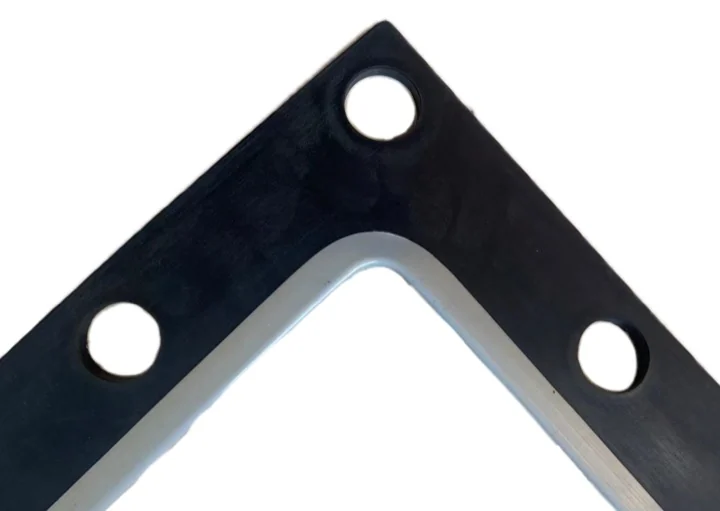
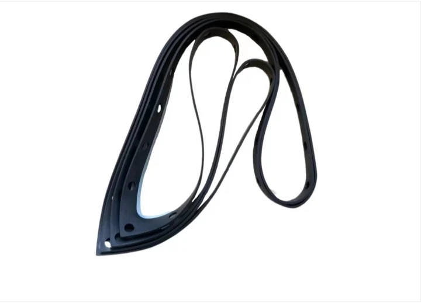
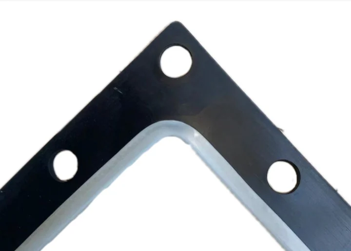
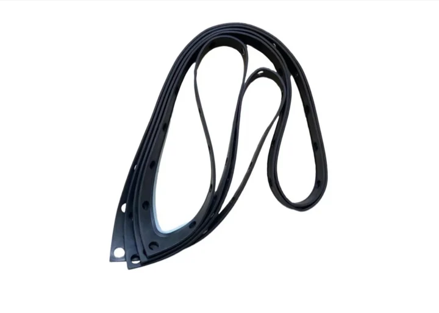
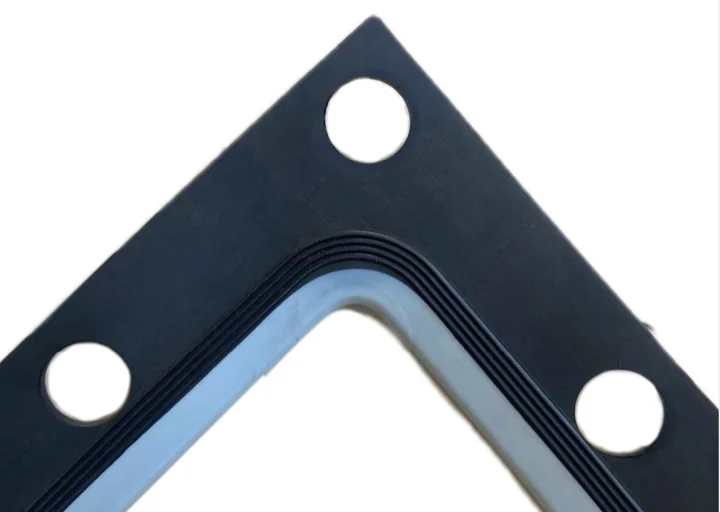
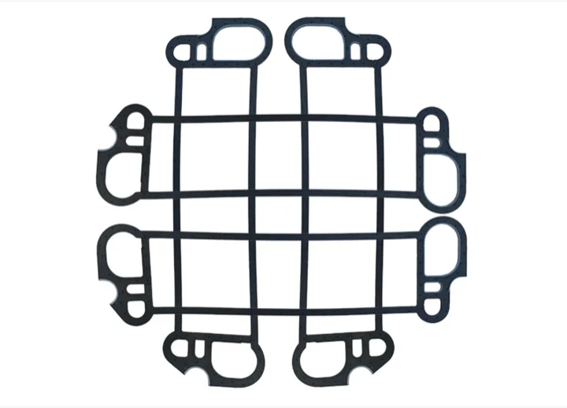

적용 및 개조
Metatecno 는 전해조 셀을 제조하고 유지보수 및 막간 거리 개조용 씰 부품을 공급합니다. DD350, UHDE, INEOS, Asahi Kasei, BlueStar, Chlorine Engineers 등은 도면과 운전 조건으로 확인합니다.

산업용 고무 및 불소수지 실링, 전해조 셀 및 씰링 제품.





전해조 셀 및 씰링 제품
| 제품 코드 | MT-ICI |
|---|---|
| 적용 | 클로르-알칼리 이온막 전해조용 씰 또는 불소수지 부품 |
| 적용 가능한 전해조 | DD350, UHDE, INEOS, Asahi Kasei, BlueStar, Chlorine Engineers 및 기타 플랫폼은 도면 확인 후 적용 |
| 재질 | EPDM / FKM / NBR / PTFE / PFA / FEP / PVDF 또는 매체에 따른 맞춤 고무-불소수지 재질 |
| 경도 | 고무 부품은 보통 60-75 Shore A, 도면과 배합에 따라 확정 |
| 사용 온도 | 고무 부품은 보통 -40 C~+120 C, 불소수지는 재질에 따라 다름 |
| 화학 매체 | 염수, 가성소다, 염소측 및 부식성 화학 매체 |
| 치수 | 고객 도면, 샘플 또는 개조 요구에 따름 |
| 제작 범위 | 신규 전해조 셀, 유지보수용 씰 부품, 막간 거리 개조 프로젝트 |
| 품질 문서 | 주문 도면과 품질 합의에 따른 검사 기록 |
Metatecno 는 전해조 셀을 제조하고 유지보수 및 막간 거리 개조용 씰 부품을 공급합니다. DD350, UHDE, INEOS, Asahi Kasei, BlueStar, Chlorine Engineers 등은 도면과 운전 조건으로 확인합니다.
재질은 매체, 온도, 압력, 장착 위치와 유지보수 주기에 따라 선택합니다. EPDM, FKM, NBR 및 불소수지 재질은 실제 조건으로 평가합니다.
씰링 면을 청소하고 정렬을 확인하며, 가스켓이 비틀리지 않도록 하고, 볼트를 대각 순서로 조인 뒤 초기 압축 후 토크를 다시 확인합니다.
일반적으로 외관, 주요 치수, 재질, 필요한 경우 경도, 포장 및 로트 추적성을 확인합니다.
제품은 크기와 프로젝트 요구에 따라 PE 봉투, carton 또는 수출용 목상자로 포장합니다.
도면, 샘플 사진, 재질, 수량, 매체, 온도, 압력 및 운전 조건을 보내주십시오.
주요 제품
Metatecno